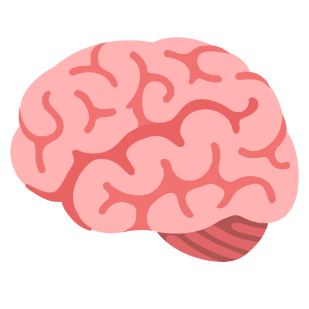
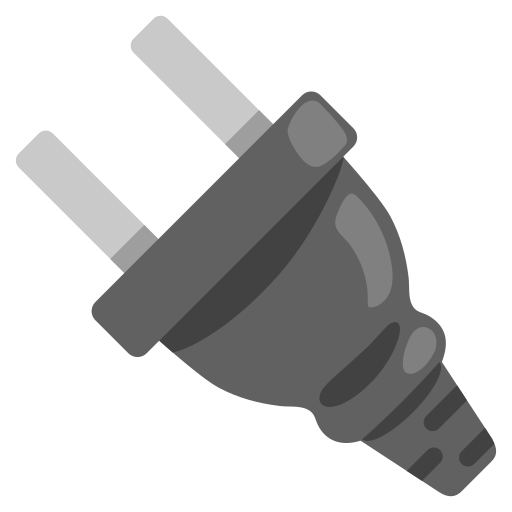
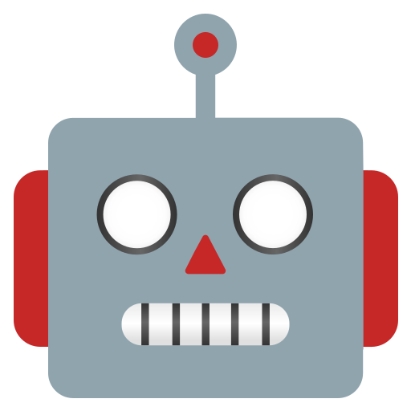
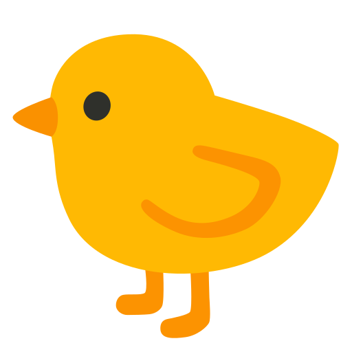
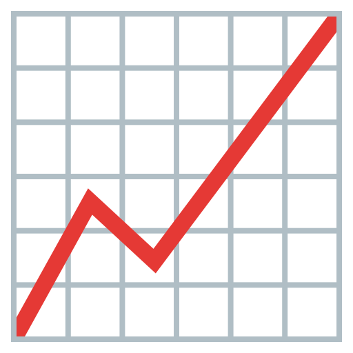
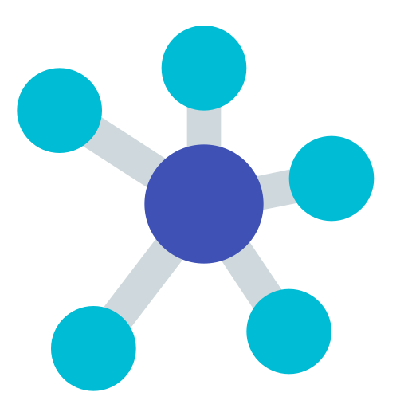
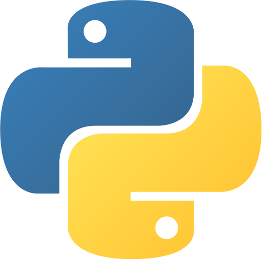
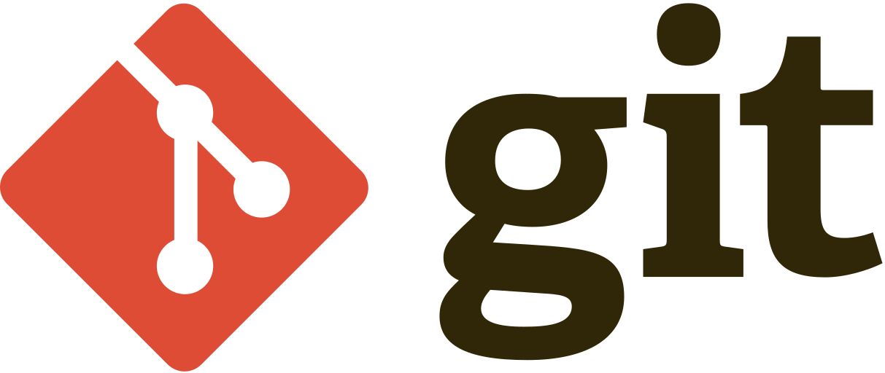
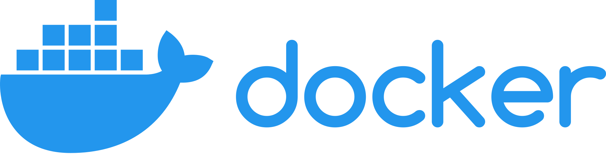

從單體大語言模型到動態 Loop、工作流 Graph、MCP 協議與伺服器架構的實戰演進全貌

推理大腦：LLM & CoT
隨插即用：MCP 統一協議

單純生成文本時，如果任務需要 10 個步驟，只要第 2 步猜錯，後面 8 步就會順著錯誤胡說八道，最終完全偏離目標。
傳統 AI 吐出一大段程式碼看似合理，但一編譯就掛掉。模型不知道自己錯在哪裡，必須由人類工程師在中間當苦力複製貼上。
傳統 RAG 只能「查出文件並摘錄總結」，但無法執行如「把使用者權限降級」或「發起 Git Pull Request」的主動動作。
極簡的「預測下一個詞」無監督目標，在數千億 Token 的巨量資料訓練下，產生了驚人的常識與代碼理解力。

05 · 算力規律這條公式從數學上預言了：只要等比例擴增算力、參數與高質量數據，模型的推理能力就會穩定上升！
在 GSM8K 小學數學應用題中，標準 Few-shot 的準確率僅僅只有 17.9%。
只要在示範中加入中間思考步驟，準確率直接暴增至 56.9%！

08 · 核心引擎 (二)
LangGraph n8n 自動化儲存後重啟，AI 立即獲得操控 GitHub 倉庫與本地資料庫的真實權限！
AGENTS.md 或 .cursorrules，Agent 會在啟動時自動讀取並奉為最高準則。AGENTS.md 嚴守《來源溯源鐵律》！
因為軟體需求具有高彈性（$\epsilon > 1$），$\frac{\mathrm{d} \ln L}{\mathrm{d} \ln A} > 0$！生產力越高，被創造出的新任務與就業職缺越多！

失敗經驗被存入分層記憶中，在下一輪決策時作為先驗提示，實現「越戰越勇」的自適應能力。
你已經掌握了現代 AI 從大腦、手腳、控制 Loop、工作流 Graph 到實務工具的完整實戰地圖
AGENTS.md 明確定義專案邊界與安全防護網！
wiki/ 中，在 Obsidian 中即可隨時查閱、反向鏈結與持續迭代！